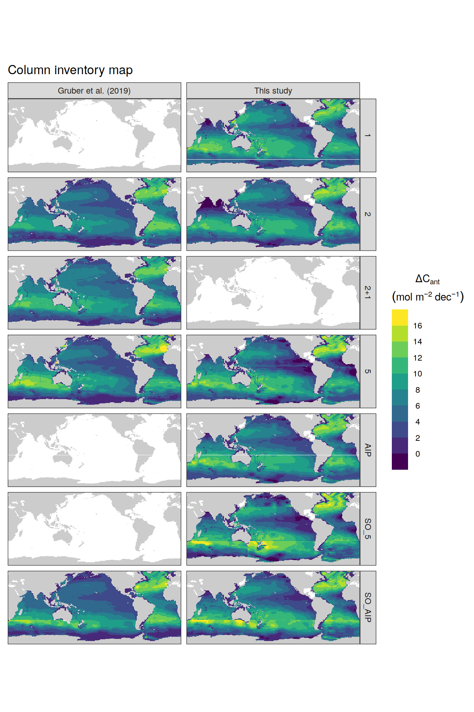
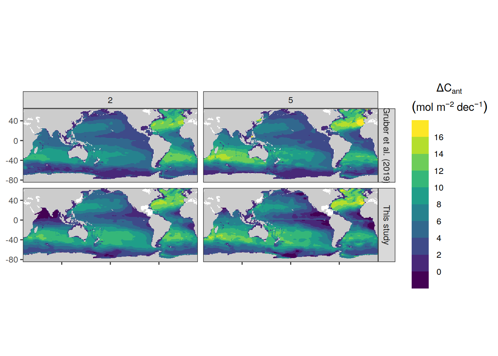

Column inventories
Jens Daniel Müller
18 April, 2023
Last updated: 2023-04-18
Checks: 7 0
Knit directory:
emlr_obs_analysis/analysis/
This reproducible R Markdown analysis was created with workflowr (version 1.7.0). The Checks tab describes the reproducibility checks that were applied when the results were created. The Past versions tab lists the development history.
Great! Since the R Markdown file has been committed to the Git repository, you know the exact version of the code that produced these results.
Great job! The global environment was empty. Objects defined in the global environment can affect the analysis in your R Markdown file in unknown ways. For reproduciblity it’s best to always run the code in an empty environment.
The command set.seed(20210412) was run prior to running
the code in the R Markdown file. Setting a seed ensures that any results
that rely on randomness, e.g. subsampling or permutations, are
reproducible.
Great job! Recording the operating system, R version, and package versions is critical for reproducibility.
Nice! There were no cached chunks for this analysis, so you can be confident that you successfully produced the results during this run.
Great job! Using relative paths to the files within your workflowr project makes it easier to run your code on other machines.
Great! You are using Git for version control. Tracking code development and connecting the code version to the results is critical for reproducibility.
The results in this page were generated with repository version 8fbd4b1. See the Past versions tab to see a history of the changes made to the R Markdown and HTML files.
Note that you need to be careful to ensure that all relevant files for
the analysis have been committed to Git prior to generating the results
(you can use wflow_publish or
wflow_git_commit). workflowr only checks the R Markdown
file, but you know if there are other scripts or data files that it
depends on. Below is the status of the Git repository when the results
were generated:
Ignored files:
Ignored: .Rhistory
Ignored: .Rproj.user/
Ignored: data/
Ignored: output/other/
Ignored: output/presentation/
Ignored: output/publication/
Untracked files:
Untracked: code/RScript_Jens_globalMap.R
Untracked: code/choky-barb_reprex.R
Untracked: code/choky-barb_reprex.md
Untracked: code/choky-barb_reprex_files/
Untracked: code/raster_dataframe.R
Untracked: code/results_publication_backup_incl_ensemble_uncertainty_20221111.Rmd
Untracked: code/tidyterra_spatRaster.R
Untracked: code/write_ocean_raster_netcdf.R
Untracked: ok-coqui_reprex_files/
Unstaged changes:
Deleted: analysis/MLR_target_budgets.Rmd
Deleted: analysis/MLR_target_column_inventories.Rmd
Deleted: analysis/MLR_target_zonal_sections.Rmd
Modified: analysis/_site.yml
Modified: analysis/results_publication.Rmd
Modified: code/Workflowr_project_managment.R
Note that any generated files, e.g. HTML, png, CSS, etc., are not included in this status report because it is ok for generated content to have uncommitted changes.
These are the previous versions of the repository in which changes were
made to the R Markdown
(analysis/G19_column_inventories.Rmd) and HTML
(docs/G19_column_inventories.html) files. If you’ve
configured a remote Git repository (see ?wflow_git_remote),
click on the hyperlinks in the table below to view the files as they
were in that past version.
| File | Version | Author | Date | Message |
|---|---|---|---|---|
| Rmd | 8fbd4b1 | jens-daniel-mueller | 2023-04-18 | tag levels small letters |
| html | 375300e | jens-daniel-mueller | 2022-11-14 | Build site. |
| html | cc337dd | jens-daniel-mueller | 2022-11-11 | Build site. |
| html | ec60f68 | jens-daniel-mueller | 2022-11-07 | Build site. |
| html | e99640e | jens-daniel-mueller | 2022-07-29 | Build site. |
| Rmd | f04d8ed | jens-daniel-mueller | 2022-07-29 | rebuild website |
| html | 08c00b4 | jens-daniel-mueller | 2022-07-16 | Build site. |
| html | 692c937 | jens-daniel-mueller | 2022-07-16 | Build site. |
| html | b44c72a | jens-daniel-mueller | 2022-07-03 | Build site. |
| html | a13a7cf | jens-daniel-mueller | 2022-06-28 | Build site. |
| html | b52b159 | jens-daniel-mueller | 2022-06-27 | Build site. |
| html | 09b0780 | jens-daniel-mueller | 2022-05-24 | Build site. |
| html | 25da2fb | jens-daniel-mueller | 2022-05-24 | Build site. |
| Rmd | aba19e4 | jens-daniel-mueller | 2022-05-24 | rebuild with multi model assesment |
| html | e09320d | jens-daniel-mueller | 2022-04-12 | Build site. |
| html | 8dca96a | jens-daniel-mueller | 2022-04-12 | Build site. |
| html | acad2e2 | jens-daniel-mueller | 2022-04-09 | Build site. |
| html | c3a6238 | jens-daniel-mueller | 2022-03-08 | Build site. |
| html | de557de | jens-daniel-mueller | 2022-01-28 | Build site. |
| html | 9753eb8 | jens-daniel-mueller | 2022-01-26 | Build site. |
| html | f347cd7 | jens-daniel-mueller | 2022-01-18 | Build site. |
| html | 513630f | jens-daniel-mueller | 2022-01-18 | Build site. |
| html | d7dfc7c | jens-daniel-mueller | 2022-01-18 | Build site. |
| html | 9fe8eff | jens-daniel-mueller | 2022-01-13 | Build site. |
| html | 269809e | jens-daniel-mueller | 2022-01-12 | Build site. |
| html | 1696b98 | jens-daniel-mueller | 2022-01-11 | Build site. |
| html | 570e738 | jens-daniel-mueller | 2022-01-10 | Build site. |
| html | 9bf6789 | jens-daniel-mueller | 2022-01-10 | Build site. |
| html | 7e0a36b | jens-daniel-mueller | 2021-11-21 | Build site. |
| html | e505a4b | jens-daniel-mueller | 2021-11-09 | Build site. |
| html | 66ec048 | jens-daniel-mueller | 2021-11-04 | Build site. |
| Rmd | 3eaddfc | jens-daniel-mueller | 2021-11-04 | compared G19 and this study directly |
| html | 71920de | jens-daniel-mueller | 2021-11-04 | Build site. |
| html | f7c3da2 | jens-daniel-mueller | 2021-11-03 | Build site. |
| Rmd | 582b24e | jens-daniel-mueller | 2021-11-03 | rebuild with G19 runs |
center <- -160
boundary <- center + 180
target_crs <- paste0("+proj=robin +over +lon_0=", center)
# target_crs <- paste0("+proj=eqearth +over +lon_0=", center)
# target_crs <- paste0("+proj=eqearth +lon_0=", center)
# target_crs <- paste0("+proj=igh_o +lon_0=", center)
worldmap <- ne_countries(scale = 'small',
type = 'map_units',
returnclass = 'sf')
worldmap <- worldmap %>% st_break_antimeridian(lon_0 = center)
worldmap_trans <- st_transform(worldmap, crs = target_crs)
ggplot() +
geom_sf(data = worldmap_trans)
fig.path you set was
ignored by workflowr.
coastline <- ne_coastline(scale = 'small', returnclass = "sf")
coastline <- st_break_antimeridian(coastline, lon_0 = 200)
coastline_trans <- st_transform(coastline, crs = target_crs)
# ggplot() +
# geom_sf(data = worldmap_trans, fill = "grey", col="grey") +
# geom_sf(data = coastline_trans)
bbox <- st_bbox(c(xmin = -180, xmax = 180, ymax = 65, ymin = -78), crs = st_crs(4326))
bbox <- st_as_sfc(bbox)
bbox_trans <- st_break_antimeridian(bbox, lon_0 = center)
bbox_graticules <- st_graticule(
x = bbox_trans,
crs = st_crs(bbox_trans),
datum = st_crs(bbox_trans),
lon = c(20, 20.001),
lat = c(-78,65),
ndiscr = 1e3,
margin = 0.001
)
bbox_graticules_trans <- st_transform(bbox_graticules, crs = target_crs)
rm(worldmap, coastline, bbox, bbox_trans)
# ggplot() +
# geom_sf(data = worldmap_trans, fill = "grey", col="grey") +
# geom_sf(data = coastline_trans) +
# geom_sf(data = bbox_graticules_trans)
lat_lim <- ext(bbox_graticules_trans)[c(3,4)]*1.002
lon_lim <- ext(bbox_graticules_trans)[c(1,2)]*1.005
# ggplot() +
# geom_sf(data = worldmap_trans, fill = "grey90", col = "grey90") +
# geom_sf(data = coastline_trans) +
# geom_sf(data = bbox_graticules_trans, linewidth = 1) +
# coord_sf(crs = target_crs,
# ylim = lat_lim,
# xlim = lon_lim,
# expand = FALSE) +
# theme(
# panel.border = element_blank(),
# axis.text = element_blank(),
# axis.ticks = element_blank()
# )
latitude_graticules <- st_graticule(
x = bbox_graticules,
crs = st_crs(bbox_graticules),
datum = st_crs(bbox_graticules),
lon = c(20, 20.001),
lat = c(-60,-30,0,30,60),
ndiscr = 1e3,
margin = 0.001
)
latitude_graticules_trans <- st_transform(latitude_graticules, crs = target_crs)
latitude_labels <- data.frame(lat_label = c("60°N","30°N","Eq.","30°S","60°S"),
lat = c(60,30,0,-30,-60)-4, lon = c(35)-c(0,2,4,2,0))
latitude_labels <- st_as_sf(x = latitude_labels,
coords = c("lon", "lat"),
crs = "+proj=longlat")
latitude_labels_trans <- st_transform(latitude_labels, crs = target_crs)
# ggplot() +
# geom_sf(data = worldmap_trans, fill = "grey", col = "grey") +
# geom_sf(data = coastline_trans) +
# geom_sf(data = bbox_graticules_trans) +
# geom_sf(data = latitude_graticules_trans,
# col = "grey60",
# linewidth = 0.2) +
# geom_sf_text(data = latitude_labels_trans,
# aes(label = lat_label),
# size = 3,
# col = "grey60")1 Read files
# identify required version IDs
Version_IDs <-
list.files(path = "/nfs/kryo/work/jenmueller/emlr_cant/observations",
pattern = "v_G0")for (i_Version_IDs in Version_IDs) {
# i_Version_IDs <- Version_IDs[1]
print(i_Version_IDs)
path_version_data <-
paste(path_observations,
i_Version_IDs,
"/data/",
sep = "")
# load and join data files
dcant_inv <-
read_csv(paste(path_version_data,
"dcant_inv.csv",
sep = ""))
dcant_inv_mod_truth <-
read_csv(paste(path_version_data,
"dcant_inv_mod_truth.csv",
sep = "")) %>%
filter(method == "total") %>%
select(-method)
dcant_inv_bias <-
read_csv(paste(path_version_data,
"dcant_inv_bias.csv",
sep = "")) %>%
mutate(Version_ID = i_Version_IDs)
dcant_inv <- bind_rows(dcant_inv,
dcant_inv_mod_truth) %>%
mutate(Version_ID = i_Version_IDs)
dcant_budget_lat_grid <-
read_csv(paste(path_version_data,
"dcant_budget_lat_grid.csv",
sep = "")) %>%
mutate(Version_ID = i_Version_IDs)
dcant_budget_lon_grid <-
read_csv(paste(path_version_data,
"dcant_budget_lon_grid.csv",
sep = "")) %>%
mutate(Version_ID = i_Version_IDs)
params_local <-
read_rds(paste(path_version_data,
"params_local.rds",
sep = ""))
params_local <- bind_cols(
Version_ID = i_Version_IDs,
MLR_basins = params_local$MLR_basins,
tref1 = params_local$tref1,
tref2 = params_local$tref2,
gap_filling = params_local$gap_filling,
rarefication = params_local$rarefication,
rarefication_threshold = params_local$rarefication_threshold,
MLR_predictors = str_c(params_local$MLR_predictors, collapse = "+"),
vif_max = params_local$vif_max
)
tref <- read_csv(paste(path_version_data,
"tref.csv",
sep = ""))
params_local <- params_local %>%
mutate(
median_year_1 = sort(tref$median_year)[1],
median_year_2 = sort(tref$median_year)[2],
duration = median_year_2 - median_year_1,
period = paste(median_year_1, "-", median_year_2)
)
if (exists("dcant_inv_all")) {
dcant_inv_all <- bind_rows(dcant_inv_all, dcant_inv)
}
if (!exists("dcant_inv_all")) {
dcant_inv_all <- dcant_inv
}
if (exists("dcant_inv_bias_all")) {
dcant_inv_bias_all <- bind_rows(dcant_inv_bias_all, dcant_inv_bias)
}
if (!exists("dcant_inv_bias_all")) {
dcant_inv_bias_all <- dcant_inv_bias
}
if (exists("dcant_budget_lat_grid_all")) {
dcant_budget_lat_grid_all <- bind_rows(dcant_budget_lat_grid_all, dcant_budget_lat_grid)
}
if (!exists("dcant_budget_lat_grid_all")) {
dcant_budget_lat_grid_all <- dcant_budget_lat_grid
}
if (exists("dcant_budget_lon_grid_all")) {
dcant_budget_lon_grid_all <- bind_rows(dcant_budget_lon_grid_all, dcant_budget_lon_grid)
}
if (!exists("dcant_budget_lon_grid_all")) {
dcant_budget_lon_grid_all <- dcant_budget_lon_grid
}
if (exists("params_local_all")) {
params_local_all <- bind_rows(params_local_all, params_local)
}
if (!exists("params_local_all")) {
params_local_all <- params_local
}
}[1] "v_G001"
[1] "v_G002"
[1] "v_G003"
[1] "v_G004"
[1] "v_G005"
[1] "v_G006"rm(dcant_inv,
dcant_inv_bias,
dcant_inv_mod_truth,
dcant_budget_lat_grid,
dcant_budget_lon_grid,
params_local,
tref)
# params_local_all <-
# params_local_all %>%
# mutate(period = factor(period, c("1994 - 2004", "2004 - 2014", "1994 - 2014")))
dcant_inv_all <- full_join(dcant_inv_all,
params_local_all)
dcant_inv_bias_all <- full_join(dcant_inv_bias_all,
params_local_all)
dcant_budget_lat_grid_all <- full_join(dcant_budget_lat_grid_all,
params_local_all)
dcant_budget_lon_grid_all <- full_join(dcant_budget_lon_grid_all,
params_local_all)dcant_inv_all <- dcant_inv_all %>%
filter(inv_depth == params_global$inventory_depth_standard)
dcant_budget_lat_grid_all <- dcant_budget_lat_grid_all %>%
filter(inv_depth == params_global$inventory_depth_standard)
dcant_budget_lon_grid_all <- dcant_budget_lon_grid_all %>%
filter(inv_depth == params_global$inventory_depth_standard)dcant_budget_lat_grid_all <- dcant_budget_lat_grid_all %>%
pivot_wider(names_from = estimate,
values_from = value) %>%
filter(method == "total")
dcant_budget_lon_grid_all <- dcant_budget_lon_grid_all %>%
pivot_wider(names_from = estimate,
values_from = value) %>%
filter(method == "total")dcant_inv_all_G19 <- read_csv(paste0(path_preprocessing,
"G19_dcant_inv_all.csv"))2 Individual cases
2.1 Absoulte values
dcant_inv_join <- bind_rows(
dcant_inv_all_G19 %>%
filter(Version_ID %in% c("01", "04", "05", "07")) %>%
mutate(
MLR_basins = recode(
Version_ID,
"01" = "2",
"04" = "SO_AIP",
"05" = "2+1",
"07" = "5"
)
) %>%
select(lon, lat, dcant = dcant_pos, MLR_basins) %>%
mutate(source = "Gruber et al. (2019)"),
dcant_inv_all %>%
filter(data_source %in% c("obs")) %>%
select(lon, lat, dcant, MLR_basins) %>%
mutate(source = "This study")
)
dcant_inv_join <- dcant_inv_join %>%
mutate(dcant = dcant * 10 / 13)dcant_inv_join %>%
p_map_cant_inv(var = "dcant") +
facet_grid(MLR_basins ~ source) +
theme(axis.text = element_blank(),
axis.ticks = element_blank())
| Version | Author | Date |
|---|---|---|
| ec60f68 | jens-daniel-mueller | 2022-11-07 |
| e99640e | jens-daniel-mueller | 2022-07-29 |
| 09b0780 | jens-daniel-mueller | 2022-05-24 |
| acad2e2 | jens-daniel-mueller | 2022-04-09 |
| c3a6238 | jens-daniel-mueller | 2022-03-08 |
| 9fe8eff | jens-daniel-mueller | 2022-01-13 |
| 66ec048 | jens-daniel-mueller | 2021-11-04 |
| 71920de | jens-daniel-mueller | 2021-11-04 |
| f7c3da2 | jens-daniel-mueller | 2021-11-03 |
library(ggtext)
dcant_inv_join <-
dcant_inv_join %>%
filter(MLR_basins %in% c("2", "5"))
dcant_inv_join %>%
p_map_cant_inv(var = "dcant",
title_text = NULL) +
facet_grid(source ~ MLR_basins) +
theme(axis.text.x = element_blank()) 
# legend_title <- expression(atop(Delta * C["ant"],
# (mol ~ m ^ {
# -2
# } ~ dec ^ {
# -1
# })))
legend_title <- "ΔC<sub>ant</sub> column inventory<br>(mol m<sup>-2</sup> dec<sup>-1</sup>)"
p_CI_absolute <-
p_map_mdim_robinson(
df = dcant_inv_join,
var = "dcant",
dim_row = "source",
dim_col = "MLR_basins",
legend_title = legend_title
)
dcant_inv_join_offset <- dcant_inv_join %>%
arrange(source) %>%
group_by(lon, lat, MLR_basins) %>%
mutate(dcant_offset = dcant - lag(dcant)) %>%
ungroup()
dcant_inv_join_offset %>%
p_map_cant_inv(
var = "dcant_offset",
title_text = NULL,
subtitle_text = NULL,
col = "bias"
) +
facet_grid(. ~ MLR_basins)# legend_title <- expression(atop(Delta * C["ant"] ~ offset,
# (mol ~ m ^ {
# -2
# } ~ dec ^ {
# -1
# })))
legend_title <- "ΔC<sub>ant</sub> column inventory offset<br>(mol m<sup>-2</sup> dec<sup>-1</sup>)"
p_CI_delta <-
p_map_mdim_robinson(
df = dcant_inv_join_offset %>%
filter(!is.na(dcant_offset)) %>%
select(lon, lat, dcant_offset, MLR_basins),
var = "dcant_offset",
breaks = c(-Inf, seq(-8, 8, 2), Inf),
dim_col = "MLR_basins",
legend_title = legend_title,
col = "divergent"
)
p_CI_absolute / p_CI_delta +
plot_layout(heights = c(2,1)) +
plot_annotation(tag_levels = 'a')ggsave(path = here::here("output/publication"),
filename = "FigS_dcant_column_inventory_1994_2007_vs_Gruber_2019.png",
height = 160,
width = 190,
units = "mm",
dpi = 600,
bg = "white")
sessionInfo()R version 4.2.2 (2022-10-31)
Platform: x86_64-pc-linux-gnu (64-bit)
Running under: openSUSE Leap 15.4
Matrix products: default
BLAS: /usr/local/R-4.2.2/lib64/R/lib/libRblas.so
LAPACK: /usr/local/R-4.2.2/lib64/R/lib/libRlapack.so
locale:
[1] LC_CTYPE=en_US.UTF-8 LC_NUMERIC=C
[3] LC_TIME=en_US.UTF-8 LC_COLLATE=en_US.UTF-8
[5] LC_MONETARY=en_US.UTF-8 LC_MESSAGES=en_US.UTF-8
[7] LC_PAPER=en_US.UTF-8 LC_NAME=C
[9] LC_ADDRESS=C LC_TELEPHONE=C
[11] LC_MEASUREMENT=en_US.UTF-8 LC_IDENTIFICATION=C
attached base packages:
[1] stats graphics grDevices utils datasets methods base
other attached packages:
[1] ggtext_0.1.2 terra_1.6-41 sf_1.0-9
[4] rnaturalearth_0.1.0 geomtextpath_0.1.1 colorspace_2.0-3
[7] marelac_2.1.10 shape_1.4.6 ggforce_0.4.1
[10] metR_0.13.0 scico_1.3.1 patchwork_1.1.2
[13] collapse_1.8.9 forcats_0.5.2 stringr_1.4.1
[16] dplyr_1.1.1 purrr_0.3.5 readr_2.1.3
[19] tidyr_1.2.1 tibble_3.2.1 ggplot2_3.4.0
[22] tidyverse_1.3.2 workflowr_1.7.0
loaded via a namespace (and not attached):
[1] googledrive_2.0.0 ellipsis_0.3.2 class_7.3-20
[4] rprojroot_2.0.3 markdown_1.4 fs_1.5.2
[7] gridtext_0.1.5 rstudioapi_0.14 proxy_0.4-27
[10] farver_2.1.1 bit64_4.0.5 fansi_1.0.3
[13] lubridate_1.9.0 xml2_1.3.3 codetools_0.2-18
[16] cachem_1.0.6 knitr_1.41 polyclip_1.10-4
[19] jsonlite_1.8.3 gsw_1.1-1 broom_1.0.1
[22] dbplyr_2.2.1 compiler_4.2.2 httr_1.4.4
[25] backports_1.4.1 assertthat_0.2.1 fastmap_1.1.0
[28] gargle_1.2.1 cli_3.4.1 later_1.3.0
[31] tweenr_2.0.2 htmltools_0.5.3 tools_4.2.2
[34] rnaturalearthdata_0.1.0 gtable_0.3.1 glue_1.6.2
[37] Rcpp_1.0.9 cellranger_1.1.0 jquerylib_0.1.4
[40] vctrs_0.6.1 xfun_0.35 ps_1.7.2
[43] rvest_1.0.3 timechange_0.1.1 lifecycle_1.0.3
[46] googlesheets4_1.0.1 oce_1.7-10 getPass_0.2-2
[49] MASS_7.3-58.1 scales_1.2.1 vroom_1.6.0
[52] ragg_1.2.4 hms_1.1.2 promises_1.2.0.1
[55] parallel_4.2.2 yaml_2.3.6 memoise_2.0.1
[58] sass_0.4.4 stringi_1.7.8 highr_0.9
[61] e1071_1.7-12 checkmate_2.1.0 commonmark_1.8.1
[64] rlang_1.1.0 pkgconfig_2.0.3 systemfonts_1.0.4
[67] evaluate_0.18 lattice_0.20-45 SolveSAPHE_2.1.0
[70] labeling_0.4.2 bit_4.0.5 processx_3.8.0
[73] tidyselect_1.2.0 here_1.0.1 seacarb_3.3.1
[76] magrittr_2.0.3 R6_2.5.1 generics_0.1.3
[79] DBI_1.1.3 pillar_1.8.1 haven_2.5.1
[82] whisker_0.4 withr_2.5.0 units_0.8-0
[85] sp_1.5-1 modelr_0.1.10 crayon_1.5.2
[88] KernSmooth_2.23-20 utf8_1.2.2 tzdb_0.3.0
[91] rmarkdown_2.18 grid_4.2.2 readxl_1.4.1
[94] data.table_1.14.6 callr_3.7.3 git2r_0.30.1
[97] reprex_2.0.2 digest_0.6.30 classInt_0.4-8
[100] httpuv_1.6.6 textshaping_0.3.6 munsell_0.5.0
[103] viridisLite_0.4.1 bslib_0.4.1